Российский университет дружбы народов им. П. Лумумбы
Цель работы
Освоение основных возможностей командной оболочки Midnight Commander.
Приобретение навыков практической работы по просмотру каталогов и
файлов; манипуляций с ними.
Задание
Изучите информацию о mc, вызвав в командной строке man mc.
Запустите из командной строки mc, изучите его структуру и меню.
Выполните несколько операций в mc, используя управляющие клавиши
(операции с панелями; выделение/отмена выделения файлов,
копирование/перемещение файлов, получение информации о размере и правах
доступа на файлы и/или каталоги и т.п.)
Выполните основные команды меню левой (или правой) панели. Оцените
степень подробности вывода информации о файлах.
Используя возможности подменю Файл , выполните манипуляции.
С помощью соответствующих средств подменю Команда осуществите
манипуляции.
Вызовите подменю Настройки . Освойте операции, определяющие
структуру экрана mc (Full screen, Double Width, Show Hidden Files и
т.д.)
Создайте текстовой файл text.txt.
Откройте этот файл с помощью встроенного в mc редактора.
Вставьте в открытый файл небольшой фрагмент текста, скопированный из
любого другого файла или Интернета.
Проделайте с текстом манипуляции, используя горячие клавиши.
Откройте файл с исходным текстом на некотором языке программирования
(например C или Java)
Используя меню редактора, включите подсветку синтаксиса, если она не
включена, или выключите, если она включена.
Выполнение лабораторной
работы
Изучаю информацию о mc, вызвав в командной строке man mc.
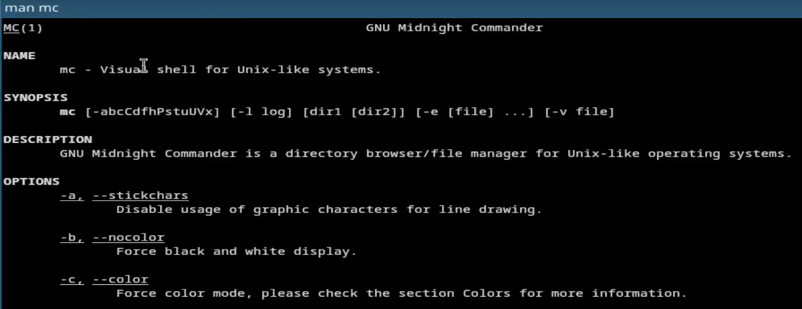
Чтение документации
Запускаю из командной строки mc, изучаю его структуру и меню.
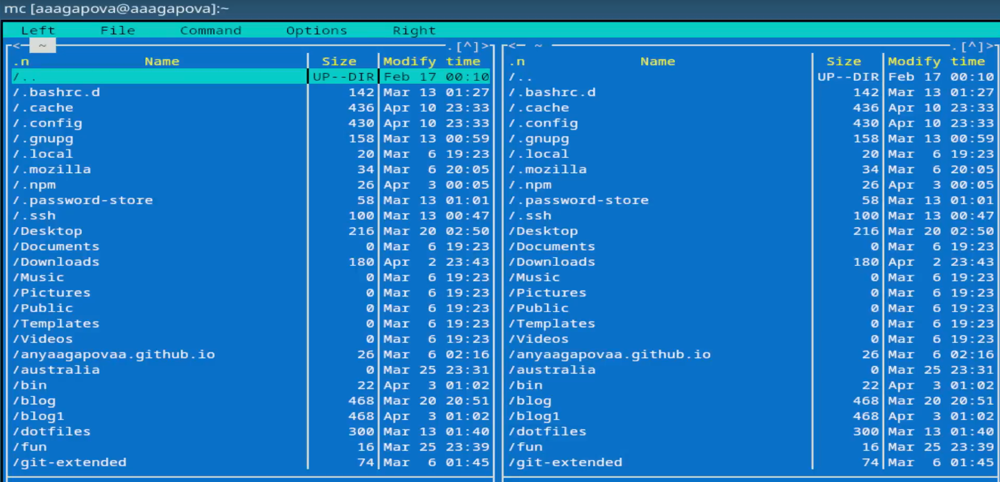
Окно mc
Используя управляющие клавиши выделяю файл.
Выделение файла
Используя управляющие клавиши отменяю выделение файла.
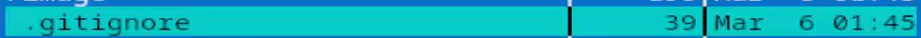
Отмена выделения файла
Смотрю содержимое текстового файла.
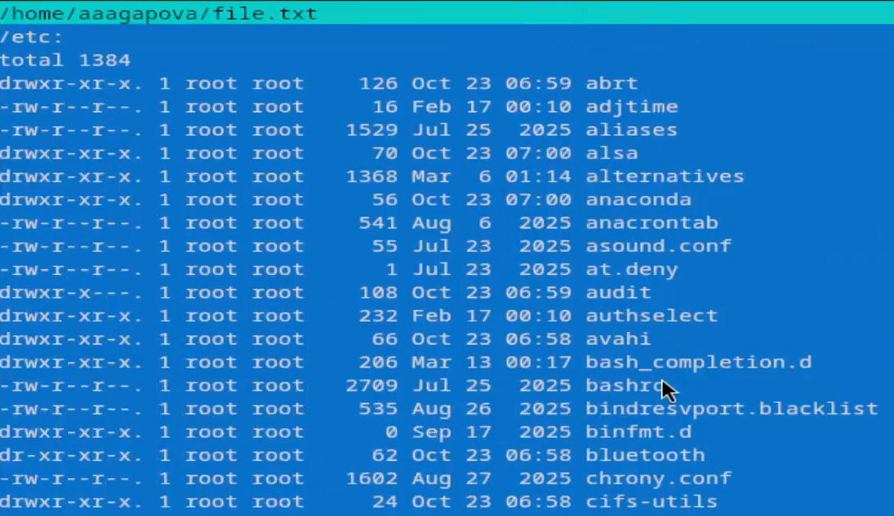
Просмотр файла
Создаю новый каталог
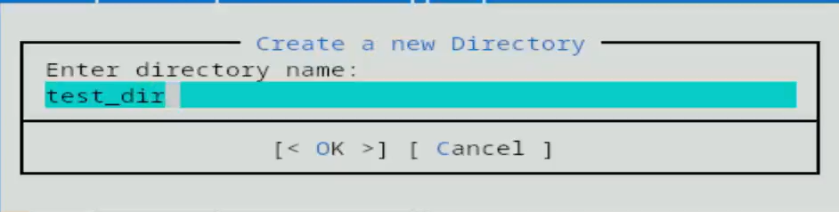
Создание каталога
Копирую файл в созданный каталог.
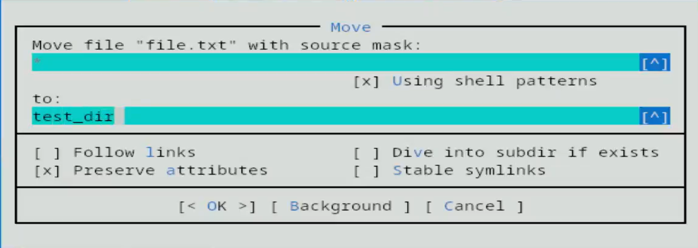
Копирование файла
Проверяю, что файл скопировался.
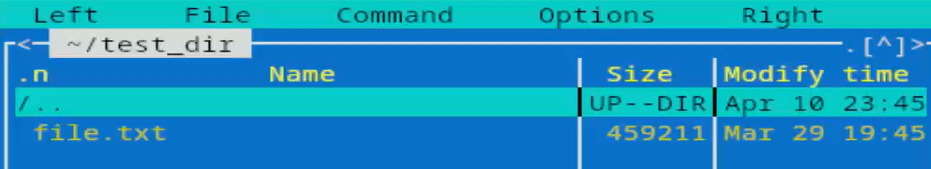
Проверка
Поиск в файловой системе файла с расширением .cpp, содержащего
строку main.
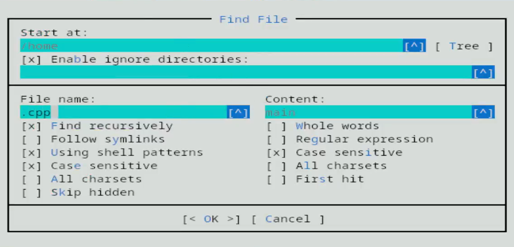
Поиск файла
Смотрю историю команд и повторяю одну из них.
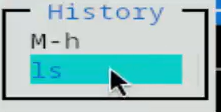
История команд
Анализирую файл расшиения.
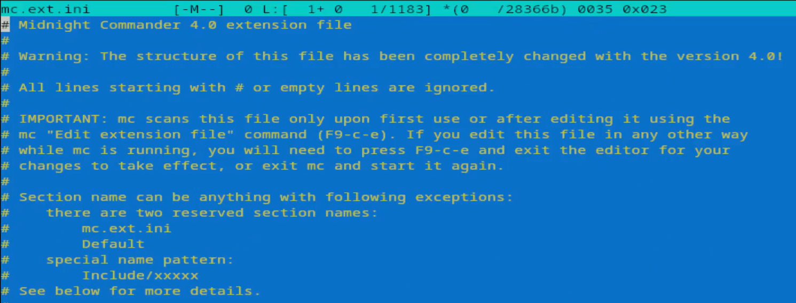
Анализ файла
Анализирую файл меню.
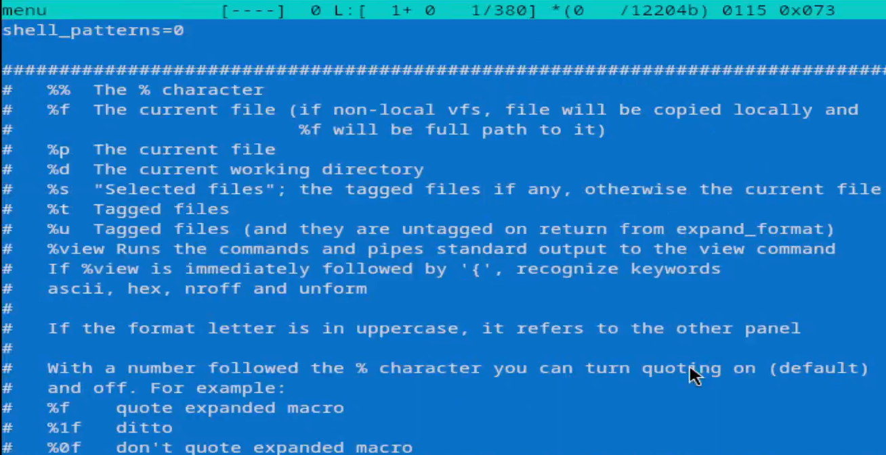
Анализ файла
Вызываю подменю Настройки . Осваиваю операции, определяющие
структуру экрана mc.
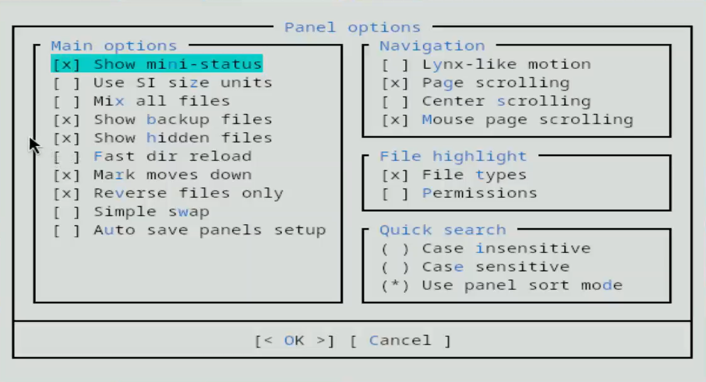
Настройки
Создаю текстовой файл.Открываю этот файл с помощью встроенного в mc
редактора. Пишу в нем текст.
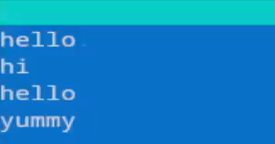
Создание файла
Удаляю строку текста.
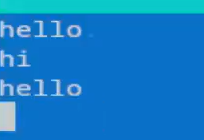
Работа с файлом
Перехожу в начало файла.
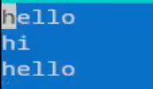
Работа с файлом
Перехожу в конец файла.
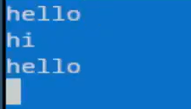
Работа с файлом
Сохраняю файл.
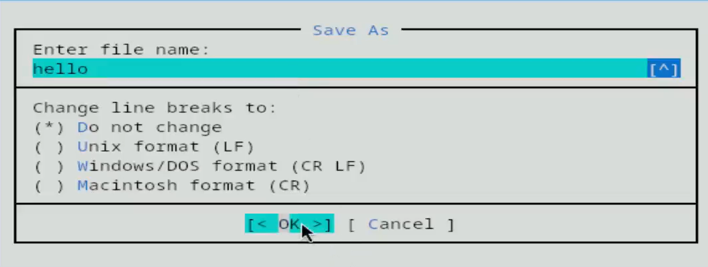
Сохранение файла
Открываю файл с исходным текстом на языке программировани.
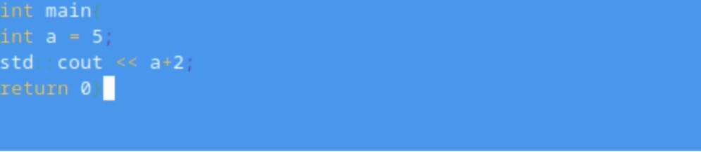
Открытие файла
Используя меню редактора, выключаю подсветку синтаксиса.
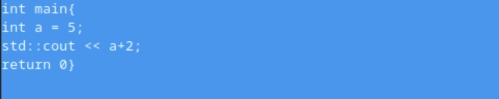
Подсветка синтаксиса
Выводы
Я освоила основные возможности командной оболочки Midnight Commander.
Приобрела навыки практической работы по просмотру каталогов, файлов и
манипуляций с ними.